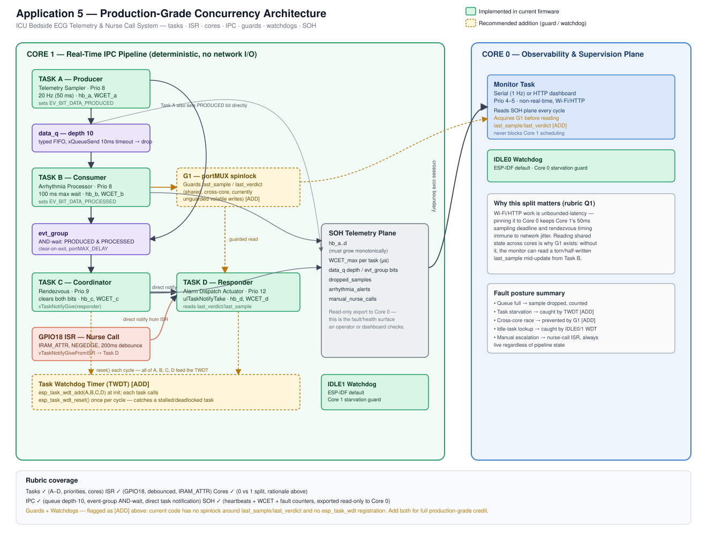

A dual-core FreeRTOS pipeline running on the ESP32-S3 that simulates an ICU bedside monitor capable of acquiring ECG, heart rate, and SpO₂ telemetry, detecting arrhythmias in real time, coordinating processing using FreeRTOS IPC primitives, and dispatching automatic alarms or manual nurse-call interrupts.
REPOAdd your YouTube video below.
Or open the Wokwi simulation:
Open Wokwi Demo
The system is implemented as a deterministic dual-core real-time pipeline. Four FreeRTOS tasks execute on Core 1 while an HTTP monitoring server runs independently on Core 0.
| Task | Description |
|---|---|
| Task A – Telemetry Sampler | Samples ECG, Heart Rate and SpO₂ every 50 ms and places one medical_telemetry_t packet into the queue. |
| Task B – Arrhythmia Processor | Receives telemetry from the queue, analyzes patient rhythm, and stores the latest diagnosis. |
| Task C – Pipeline Coordinator | Uses an Event Group rendezvous to synchronize producer and consumer before advancing the pipeline. |
| Task D – Alarm Dispatch | Waits on a Direct Task Notification to dispatch alarms or respond to manual nurse-call interrupts. |
The HTTP monitoring server performs non-real-time operations including Wi-Fi communication, HTTP request processing, HTML generation, and dashboard updates. These activities are inherently unpredictable and could delay real-time tasks if they executed on Core 1.
Keeping the web server on Core 0 isolates network activity from the telemetry pipeline, allowing Core 1 to execute deterministic scheduling with predictable latency. If the web server were moved to Core 1, producer and consumer tasks could miss deadlines, queue occupancy could increase, and alarm notifications could be delayed.
Queue depth = 10 telemetry packets
Telemetry sampling period = 50 ms
Protection window = 10 × 50 ms = 500 ms
This allows the queue to absorb approximately half a second of temporary processing delays before samples are dropped.
Event Groups are ideal when one task must wait for multiple events simultaneously. Task C waits until both Task A and Task B complete before continuing the processing pipeline.
Binary semaphores are better suited for signaling a single event or protecting shared resources.
| Mechanism | Average Wakeup Latency |
|---|---|
| Direct Task Notification | 28.9 μs |
| Binary Semaphore | 520 μs |
Direct Task Notifications were approximately 18× faster than binary semaphores because they signal a task directly without creating or managing a kernel queue object.
[Notification] Wakeup Latency: 30 us [Semaphore] Wakeup Latency: 152 us [Notification] Wakeup Latency: 30 us [Semaphore] Wakeup Latency: 257 us [Notification] Wakeup Latency: 32 us [Semaphore] Wakeup Latency: 793 us ... Average Notification = 28.9 μs Average Semaphore = 520 μs ≈18× faster